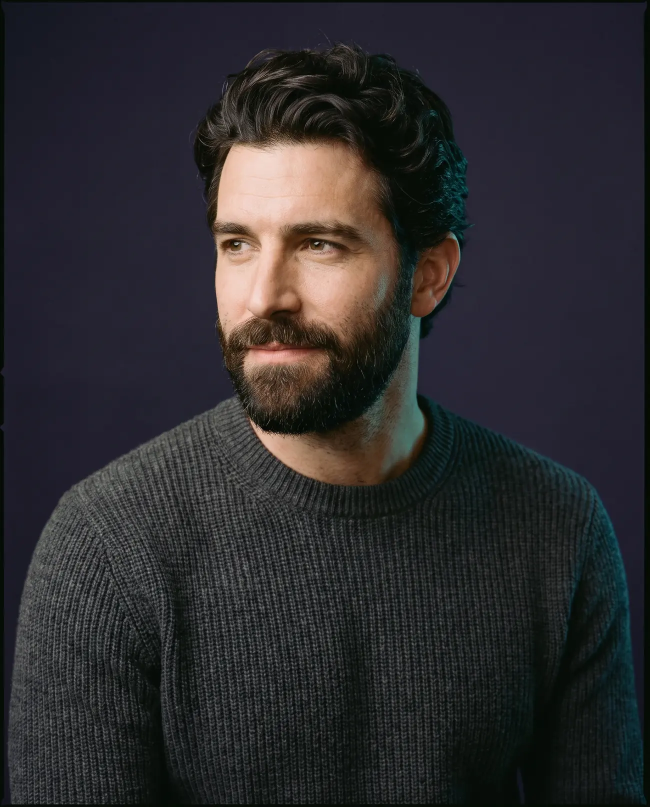
The Best Hair Transplant Clinic in Greece and Cyprus
Restored by the hands that teach the world FUE.
Led by plastic surgeon Dr. Anastasios Vekris, President of the FUE Europe Society, our doctors deliver natural, permanent results for patients from over 80 countries.
- Award winners in Greece and abroad
- 30,000+ satisfied patients
- Exclusively by doctors
- 20+ years of experience
- Direct implantation with Sharp Implanter
Google reviews
What our patients say
4.8
Based on 610 Google reviews
Hair transplantation at Advanced Hair Clinics: real patients
Natural results that speak for themselves
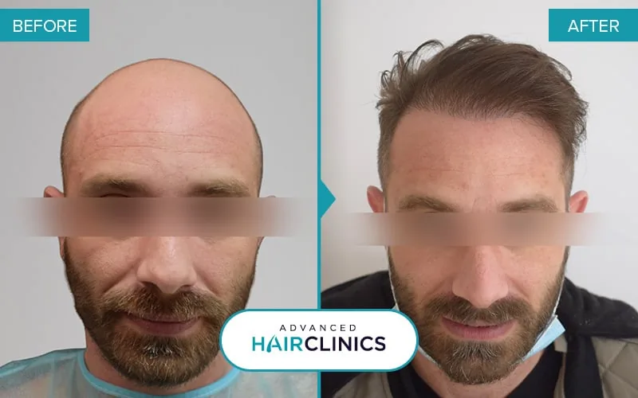
- Grafts
- 3,200
- Hairs
- 7,300
- Post-procedure
- 12 months
The #1 hair transplant clinic in Greece and Cyprus!
At Advanced Hair Clinics we have the most modern diagnostic tools and apply the most advanced treatments, conservative or invasive, with excellent results even in the most difficult cases of male and female hair loss.
Why choose us
Why patients come to us from all over the world
Best practices worldwide, applied to every patient we treat.
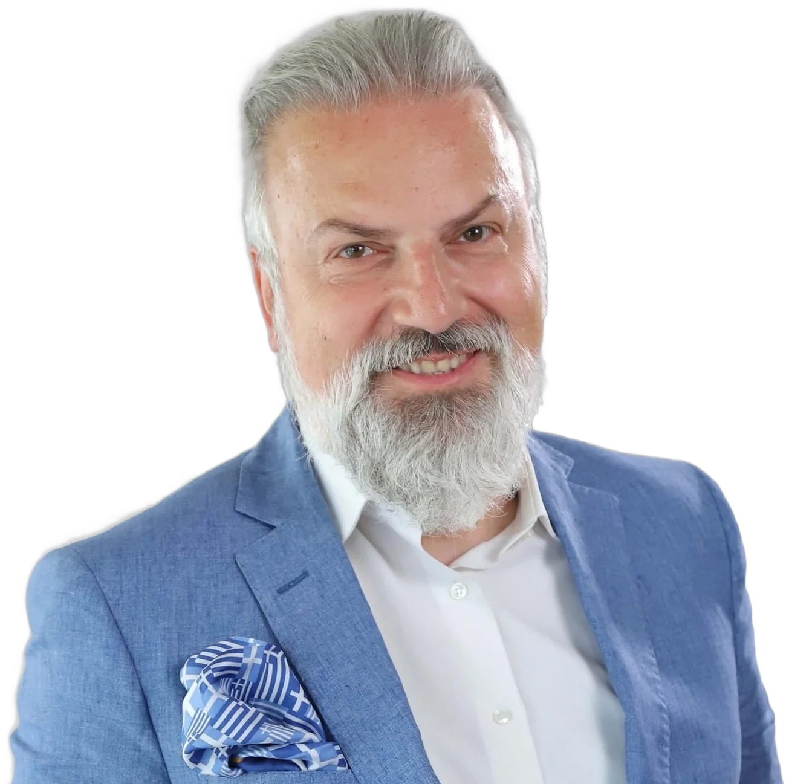
PresidentEuropean Society of Hair Restoration Surgery, FUE Europe Society
The first Greek doctor everto present live hair transplant results at the ISHRS World Congress
120+Greek and international conferences
Meet the doctor
Dr. Anastasios Vekris, MD, Plastic Surgeon
Dr. Vekris is the President of the European Society of Hair Restoration Surgery, the FUE Europe Society. He has worked with the FUE transplantation technique for more than 20 years, and at Advanced Hair Clinics he and his medical team have performed over 30,000 cases, more than any other Greek doctor.
He has been invited as a speaker, trainer and coordinator at many Greek and international medical events and conferences, and has published numerous scientific papers on plastic and aesthetic surgery and hair transplantation, taking part in more than 120 Greek and international conferences. For several years he was an invited speaker at round tables at the World Congress of the International Society of Hair Restoration Surgery, as a world-class specialist in the FUE hair transplant technique.
His scientific papers have been published in authoritative Greek and international medical journals. He has written articles for daily newspapers and many magazines, and has appeared as a guest on numerous TV shows of medical interest. Dr. Vekris continues to contribute actively with his scientific research, presented at major international conferences.
Credentials
Member of the Hellenic Society of Plastic Reconstructive Aesthetic Surgery and registered in the Specialist Register of the General Medical Council in Great Britain. He is also a member of ISHRS (International Society of Hair Restoration Surgery), IPRAS (International Confederation for Plastic, Reconstructive and Aesthetic Surgery), the World FUE Institute and many other Greek and international scientific societies.
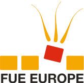
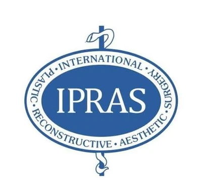
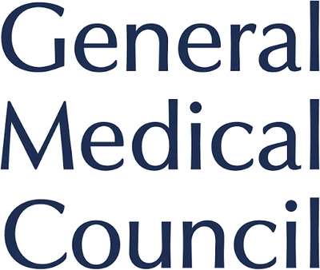
The journey
From Ioannina to the world's leading hair restoration stages
-
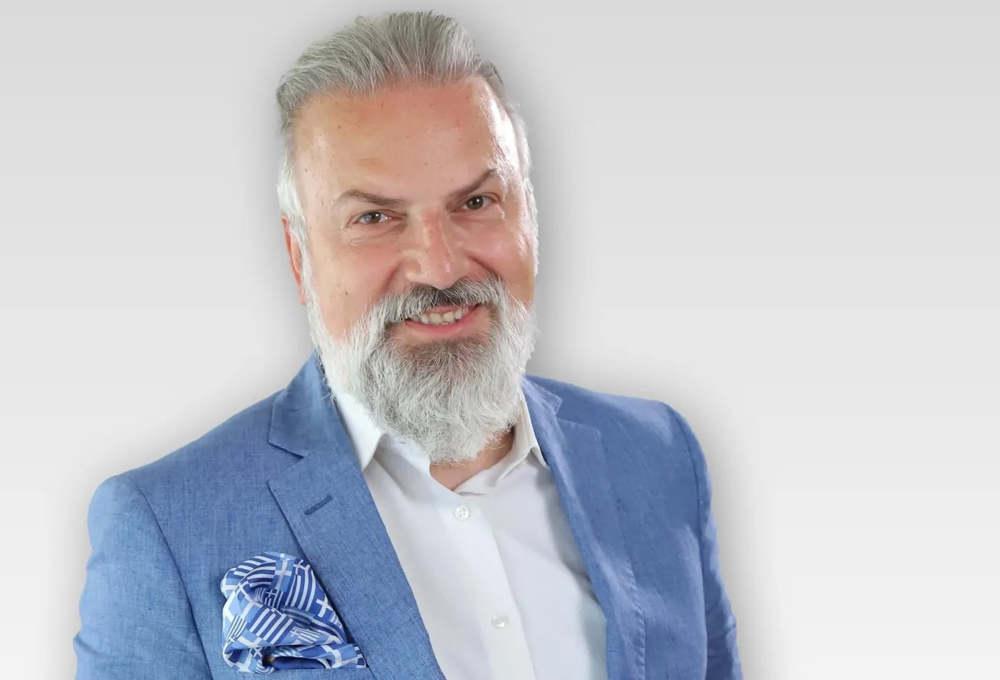
EducationMedical Faculty, University of Ioannina
He completed his medical studies at the University of Ioannina, then specialised for many years in General Surgery and Plastic, Reconstructive and Aesthetic Surgery, Microsurgery and Burns at the University Hospital of Ioannina and the Latseio Burns Centre in Athens.
-
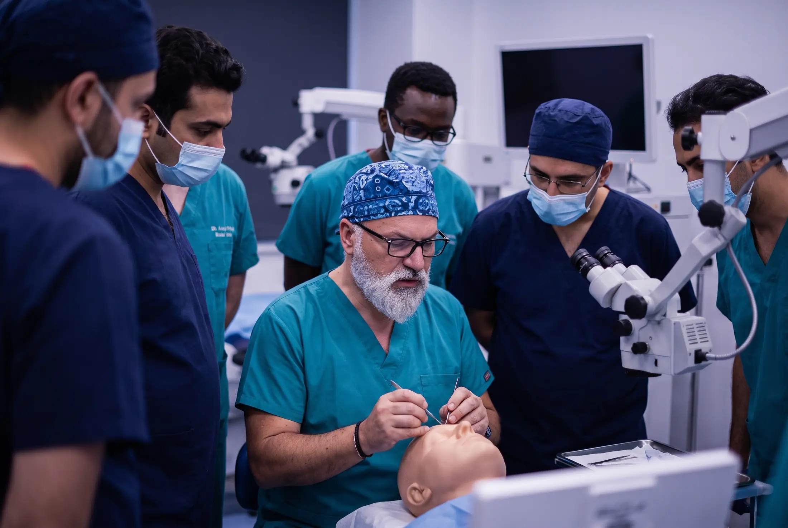
SpecialisationTrained at the world's leading hair restoration centres
He specialised in alopecia restoration surgery under Dr. J.C. Kim at KNU University Hospital in South Korea, and expanded his expertise in London and San Francisco.
-
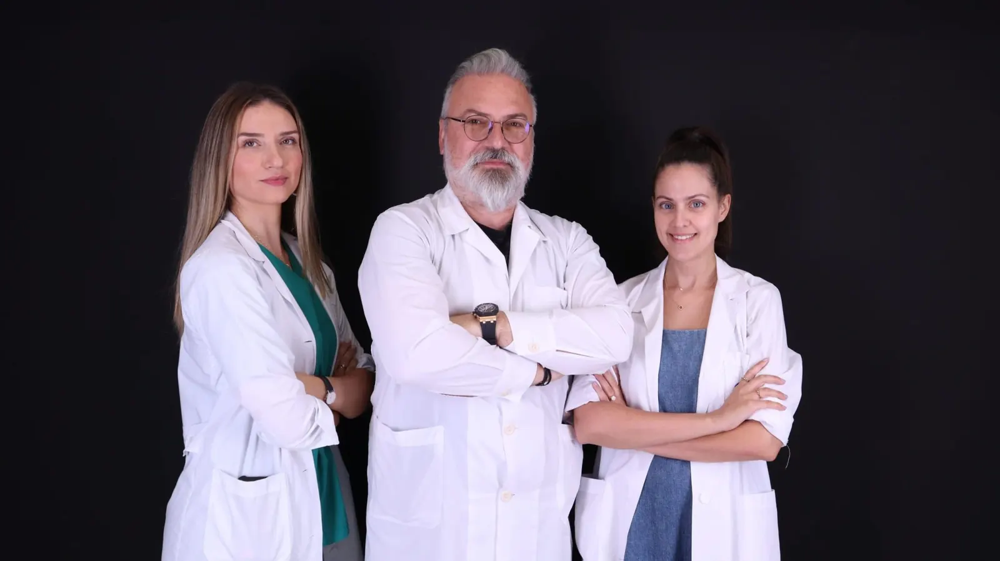
LeadershipScientific Director, DHI International Medical Group
He served as Scientific Director and Director of Medical Education and Research, training dozens of doctors and nurses in Greece and abroad.
-
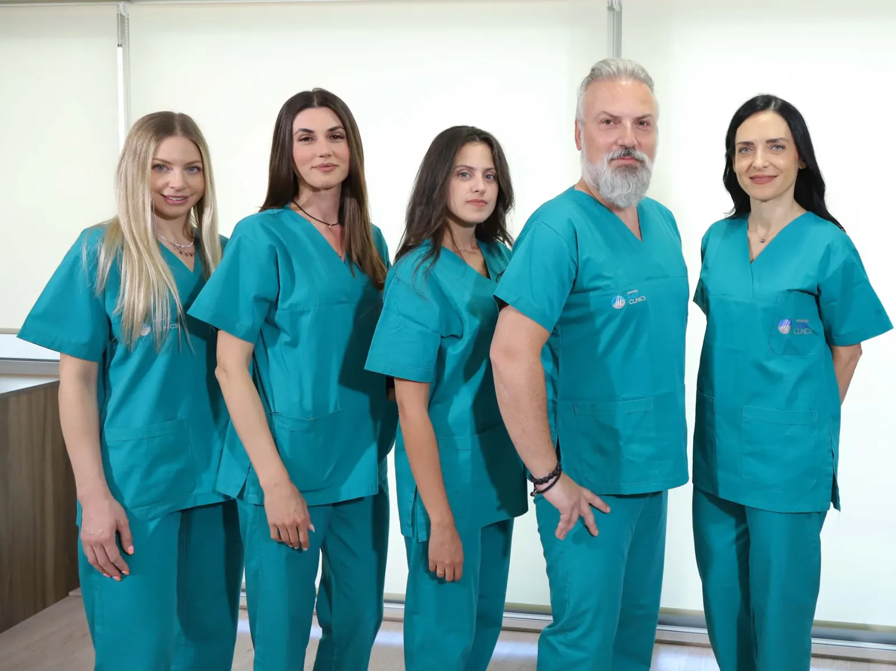
2012Advanced Hair Clinics opens
He founded Advanced Hair Clinics and began his steady participation in ISHRS congresses around the world, from Alaska and the Bahamas to Bangkok, Lisbon and Delhi.
-
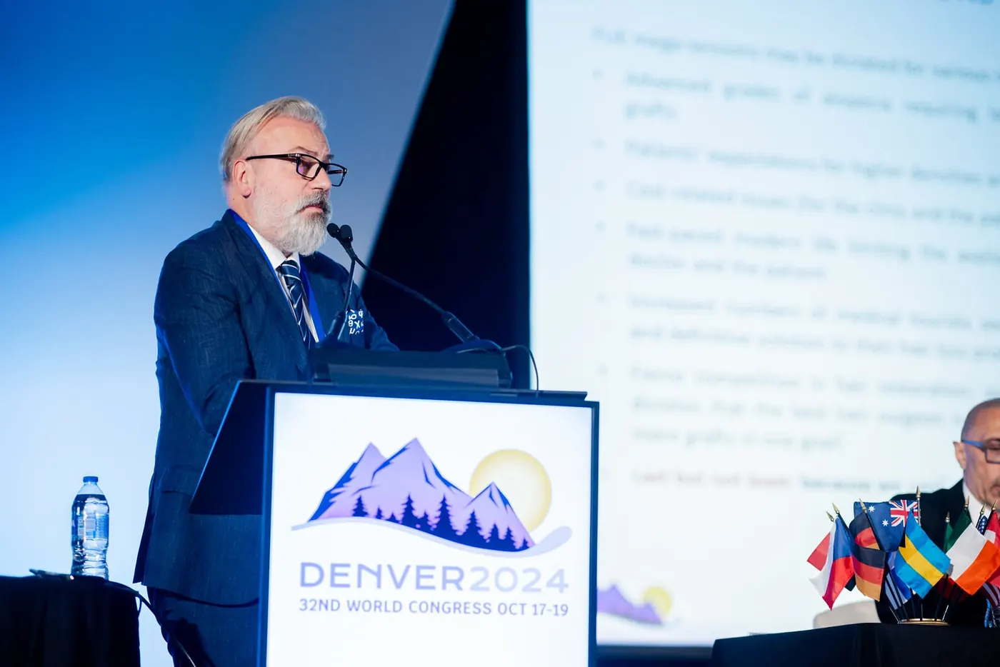
ISHRSThe first Greek doctor ever
Dr. Vekris is the only Greek physician who has presented live hair transplant results at the World Congresses of the International Society of Hair Restoration Surgery.
-
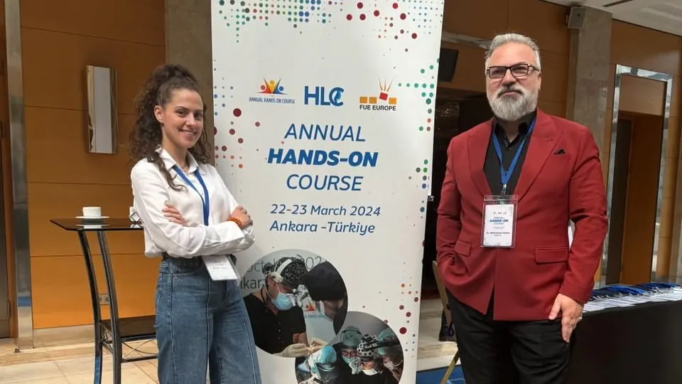
2023Elected Vice President of FUE Europe
Recognition from European peers for his work in advancing FUE, including Unshaven FUE, Long Hair FUE and Afro Hair FUE.
-
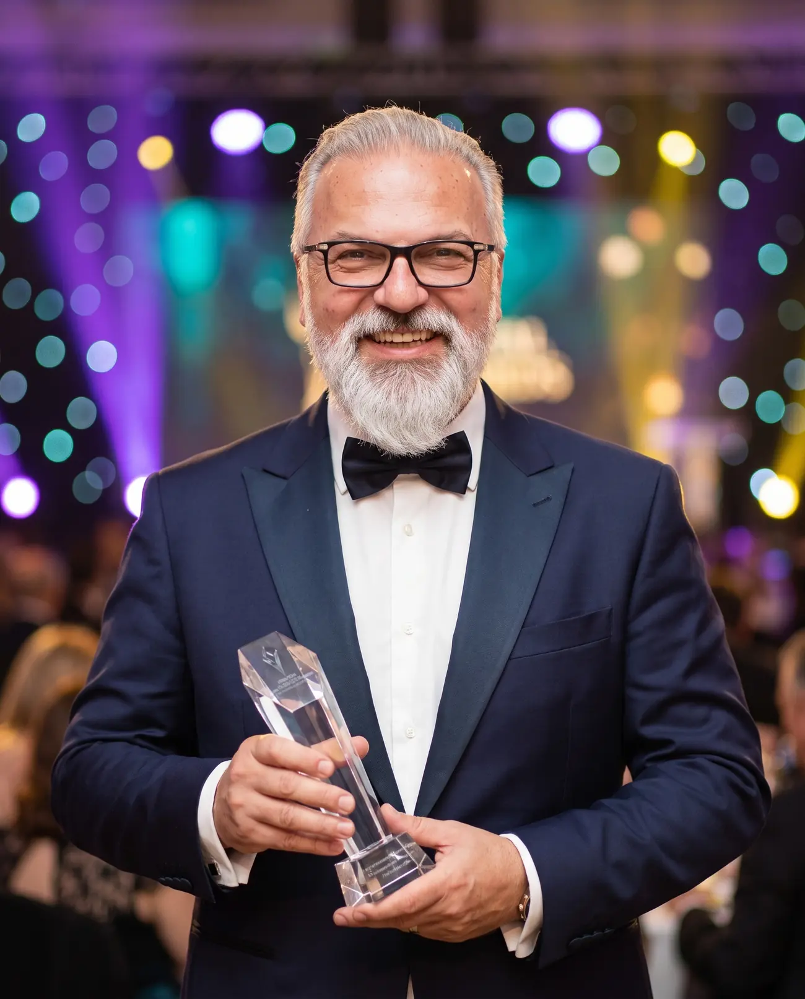
AwardsInternationally awarded and certified
Honoured by the IMTJ Medical Travel Awards, the AMWC Awards in Monaco, the World FUE Institute and the Medical Beauty Awards.
-
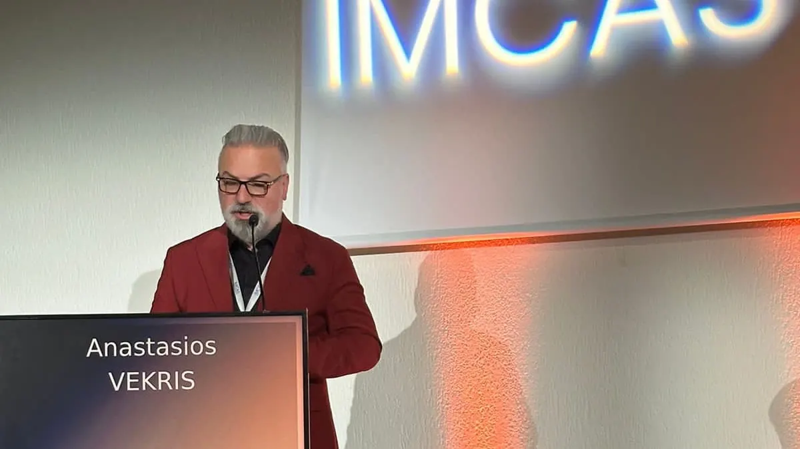
TodayPresident of the FUE Europe Society
He leads the European Society of Hair Restoration Surgery, and in 2026 served on the Scientific Committee of the IMCAS World Congress in Paris.
Our clinics
15 clinics across Greece and Cyprus, and one in Costa Rica
Athens
5 Konstantinou Ventiri Str.
+30 210 698 0451Kifissia
252A Kifissias Ave.
+30 210 623 2220Glyfada
39 Dimarchou Aggelou Metaxa
+30 210 898 0444Peristeri
16 Panagi Tsaldari Ave.
+30 210 571 5501Piraeus
13 Agiou Konstantinou
+30 210 410 0601
Thessaloniki
17 Tsimiski Str.
+30 2310 224240Patras
93-97 Riga Fereou
+30 2610 226562Rhodes
28 Ethnarchou Makariou Str.
+30 22410 32700Heraklion
27 Lasithiou & Kornarou Square
+30 2810 222303Larissa
2 Rousvelt & Kiprou Str.
+30 2410 251351Agrinio
10 Ilia Iliou Str.
+30 26410 28588Ioannina
9 Poutetsi Str.
+30 26510 21806Kalamata
79-81 Aristomenous Str.
+30 272 108 8985
Limassol
Gladstonos & 21 Georgiou Karaiskaki Str., Agia Triada
+357 2525 1040Nicosia
1 October 28th & Georgiou Griva Digeni
+357 2225 7490Costa Rica
Hospital CIMA San José, Tower 2
+506 2208 8787
VIP Hair Transplant
Your hair transplant, performed by Dr. Vekris himself
Our VIP Hair Transplant is performed exclusively by Dr. Anastasios Vekris. From your first consultation to your final result, he personally leads every step of your journey.
Consultation
Your assessment and diagnosis with Dr. Vekris in person.
Planning
He designs your hairline and treatment plan himself.
Procedure
He performs your hair transplant from start to finish.
Follow-up
He reviews your progress until your final result.
Follow us on Instagram
@advanced_hair_clinicsFrom our blog
Find out about the latest developments and treatments in the field of hair loss and hair transplantation in men and women.
View all articles